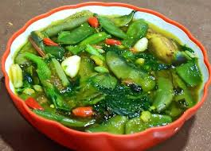

Mizo Bai

Description
Mizo Bai is a simple, nutritious vegetable stew from Mizoram, known for its minimalistic approach and use of local, seasonal greens. This dish is light, healthy, and often flavored with unique ingredients like fermented soybeans or bamboo shoots, reflecting the region's culinary tradition of boiled, low-oil meals. It’s typically served with rice and can be adapted for vegetarian or non-vegetarian preferences.Mizo Bai is a simple, nutritious vegetable stew from Mizoram, known for its minimalistic approach and use of local, seasonal greens. This dish is light, healthy, and often flavored with unique ingredients like fermented soybeans or bamboo shoots, reflecting the region's culinary tradition of boiled, low-oil meals. It’s typically served with rice and can be adapted for vegetarian or non-vegetarian preferences.
Ingredients (Serves 2-3):
- 1 cup cauliflower stalks and florets (or any seasonal greens like spinach, mustard leaves, or pumpkin leaves)
- 1/2 cup French beans, chopped
- 1 medium potato, cubed
- 2 green chilies, slit (or bird’s eye chili for authentic heat)
- 1/2 tsp baking soda (or 1 tsp fermented soybean paste/akhuni, if available)
- 1 tsp salt (adjust to taste)
- 2 cups water
- Optional: 1 tsp fermented mustard paste or bamboo shoots for authentic flavor
Steps:
- Prepare Vegetables:Wash and chop the cauliflower (stalks, florets, and leaves), French beans, and potato into bite-sized pieces.
- Boil Water:In a pot, bring 2 cups of water to a boil over high heat.
- Add Seasoning:Add salt and baking soda (or fermented soybean paste if using) to the boiling water. Stir well.
- Cook Vegetables:Add the chopped vegetables and green chilies to the pot. Stir to combine.
- Simmer:Cover and cook on medium heat for 15-20 minutes, stirring occasionally, until the vegetables are tender but not mushy. Add more water if the stew thickens too much.
- Adjust and Finish:Taste and adjust salt if needed. Cook uncovered for 2-3 minutes to let the flavors meld.
- Serve:Transfer to a serving bowl and serve hot with steamed rice.Transfer to a serving bowl and serve hot with steamed rice.
Note:For a non-vegetarian version, you can add fermented pork or pork sauce, but this vegetarian recipe captures the essence of Bai’s simplicity.
Homepage